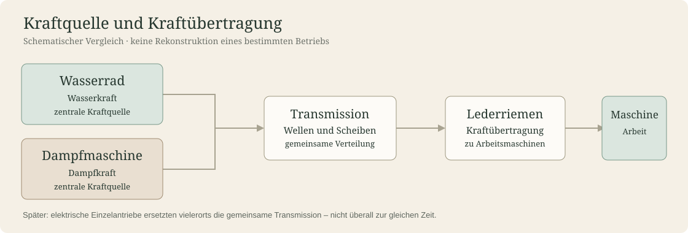

Der Ledertreibriemen war ein zentrales Verbindungsglied zwischen einer Kraftquelle und den Maschinen einer Werkstatt oder Fabrik. Seine Bedeutung erklärt sich aus dem Zusammenspiel von Antrieb, Transmission und Produktion.

Von der Kraftquelle zur Arbeitsmaschine
Wasserräder und später Dampfmaschinen konnten mehrere Maschinen über Wellen und Riemenscheiben antreiben. Ein einzelner Treibriemen übertrug die Drehbewegung zwischen zwei Scheiben; lange Transmissionswellen verteilten die Energie im Gebäude.

Der industrielle Wandel
- 19. Jahrhundert
- Verbreitung zentraler Kraftübertragung in Werkstätten und Fabriken; Lederriemen sind eine wichtige technische Lösung.
- Um 1900
- Ausgereifte Transmissionssysteme, daneben andere Riemenmaterialien und zunehmende Elektrifizierung.
- 20. Jahrhundert
- Elektrische Einzelantriebe verringern vielerorts den Bedarf an langen Transmissionsanlagen. Spezialanwendungen bleiben bestehen.
Krafft als historisches Beispiel
Bei Gebrüder Krafft gehörte die Riemenproduktion bereits in der zweiten Hälfte des 19. Jahrhunderts zum Betrieb. Die Jubiläumsschrift von 1929 beschreibt die Entwicklung der Energieversorgung und zeigt Produktionsräume. Die konkrete zeitliche Einordnung einzelner Antriebsanlagen ist nur anhand der schriftlichen Quelle vorzunehmen, nicht allein anhand der Fotografien.